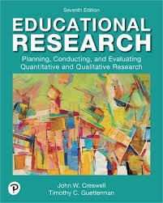
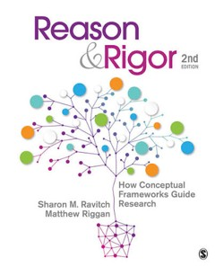

Start with a problem that matters in your practice, and discover how research can help you understand and improve it.
Dr. Sae Yeol Yoon · Professor, Department of Education · Delaware State University
Welcome to the first course in your research sequence. You already know your workplace well. In the next eight weeks, you will learn to look at a problem you see every day as a scholarly practitioner: frame it with evidence, ask a question research can answer, and choose a design that can help you improve it. You do not need research experience to start. Bring your curiosity and a problem you care about.
Every module and task serves one of them. Select a card to turn it over.
Select a module to see its guiding question and what you will make.
The question you ask decides the claim you can make and the design that fits. Try each question.
Fictional example, used throughout the course.
Each milestone builds on the work before it, so nothing is written from scratch.
Your problem, why it matters here, and what the evidence says.
Sketches of how different designs would study your problem.
A 7-minute pitch to practitioners on Weekend 3 Saturday.
The direction you will carry into your Dissertation in Practice.
Readings stay at the big-picture level.

Educational Research (7th ed.)
Creswell & Guetterman, 2025 · Pearson
The map of the research process and designs.

Reason & Rigor (2nd ed.)
Ravitch & Riggan, 2017 · SAGE
The conceptual framework that holds a study together.
We meet in Weeks 1, 4, and 7. Friday evening is orientation or review. Saturday morning is a working meeting that starts the next block of modules, so you leave with drafts you finish online.
Week 1 Sunday is set aside for CITI training. Week 4 Sunday is review and task launch. Week 7 Saturday is pitch day, with no Sunday meeting.
Each week is one module in Canvas: a few short key-topic pages, a small set of tasks on your own problem, a critical-friends exchange with classmates, and a research journal entry.
A running record of your thinking. At three checkpoints (Modules 1, 3, and 8) you look back at how your problem and ideas have changed. It also holds your log of how you used AI tools.
No. The course is built for working professionals who are new to research. Each module fits within one week around work and family.
This course is a map, not the territory. Data collection, coding, statistics, instrument development, and mixed methods integration are previewed here and taught in depth in the qualitative, quantitative, and mixed methods courses that follow. Ethics is a review here, because CITI covers it in depth.